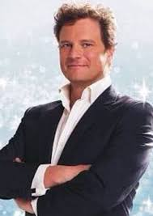

Meryl Streep
Nació el 22 de junio de 1949 en Summit, Nueva Jersey, EE. UU. Es una actriz de cine estadounidense conocida por su técnica magistral, su dominio de los dialectos y su rostro sutilmente expresivo. Ha recibido 21 nominaciones al Óscar, un número sin precedentes. Pero uno de sus papeles más icónicos lo interpretó en Mamma Mia!, donde le dió vida al papel de Donna Sheridan, dueña del hotel Villa Donna, madre de Sophie, soltera y mejor amiga de Tanya y Rosie con quienes en su juventud formó el grupo de Donna y las Dinamos. Su papel en la trama tiene que ver con el repentino casamiento de su hija y la inesperada llegada a su hotel de sus tres viejos amores del pasado.
Amanda Seyfried
Nació el 3 de diciembre de 1985 en Allentown, Pennsylvania, Estados Unidos. Es una actriz y productora, conocida por Los miserables (2012), Chicas pesadas (2004). Está casada con Thomas Sadoski desde el 12 de marzo de 2017. Tienen dos niños. En la pelicula hace el papel de Sophie, la hija de Donna. Está a punto de tener su boda pero a su vez quiere descubrir quien es su padre, por lo que invita a los tres posibles candidatos a la isla de su madre, esto tomará un papel muy importante durante la película y en la relación con Donna.
Christine Baranski
Nació el 2 de mayo de 1952, es una actriz estadounidense. Recibió el premio Primetime Emmy a la mejor actriz de reparto en una serie de comedia por su papel de Maryann Thorpe en la comedia Cybill (1995-1998). En la pelicula, Tanya es una rica y tres veces divorciada, y una de las mejores amigas de Donna. Ella y Rosie, junto con Donna, formaban el grupo musical Dinamos en su juventud. Es invitada a la boda de Sophie y juega un papel importante en los eventos que involucran la busqueda del padre de la misma.
Julie Walters
Nació el 22 de febrero de 1950, es una actriz inglesa. Ha recibido cuatro Premios de la Academia Británica de Televisión, dos Premios de la Academia Británica de Cine, dos Premios Emmy Internacionales, un Globo de Oro y un Premio Olivier. En Mamma Mia!, Julie Walters interpreta a Rosie Mulligan, una de las mejores amigas de Donna, interpretada por Meryl Streep. Rosie es una solterona, escritora de recetas y parte del trío femenino conocido como Las Dinamos, junto con Tanya y Donna, su relación con la trama es viajar a la isla para la boda que se celebrara, aportando su perspectiva y humor a la trama.
Pierce Brosnan
Nació el 16 de mayo de 1953, es un actor y productor de cine irlandés. Fue el quinto actor en interpretar al agente secreto ficticio James Bond en la saga cinematográfica de James Bond, protagonizando cuatro películas entre 1995 y 2002. En la pelicula le da vida al papel de Sam Carmichael, arquitecto neoyorquino, primer posible padre de Sophie y el interes amoroso más fuerte de Donna. Su papel en la trama es crucial para el toque de suspenso y misterio de quien es el verdadero padre de Sophie.
Colin Firth

Nació el 10 de septiembre de 1960, es un actor y productor británico conocido por su papel como Mr. Darcy en "Orgullo y Prejuicio" y como el Rey Jorge VI en "El Discurso del Rey", por el cual ganó un Oscar. También ha destacado en películas como "El Diario de Bridget Jones" y "Un Hombre Soltero". En *Mamma mia!* hace el papel de Harry Bright, es uno de los tres posibles padres de Sophie, el personaje principal. Harry es un banquero británico que fue un músico en el pasado, y se describe como reservado y algo nostálgico. También es uno de los ex amoríos de Donna.
Stellan Skarsgard
Nació en Gotemburgo, Västra Götalands län, Suecia. Es un actor y productor, conocido por Mente indomable (1997), Ninfomanía (vol. 1) (2013) y Amistad (1997). Está casado con Megan Everett-Skarsgard desde el 12 de enero de 2009. En la pelicula interpreta el papel de Bill Andersson, un aventurero escritor sueco, conocido por su espiritu audaz y su carácter divertido. Al igual que Sam y Harry, es uno de los potenciales padres de Sophie.
Dominic Cooper
Nació el 2 de junio de 1978 en Greenwich, Londres. Es conocido por su papel como el joven Howard Stark en el Universo Cinematográfico de Marvel, con apariciones en Capitán América: El primer vengador y Agent Carter. También es conocido por su papel de Jesse Custer en la serie de televisión Preacher. En la pelicula interpreta el papel de Sky, el novio de Sophie, es un joven atractivo y amable, que tiene una relación romántica con ella y se convierte en su apoyo durante su búsqueda de identidad y de su verdadero padre.